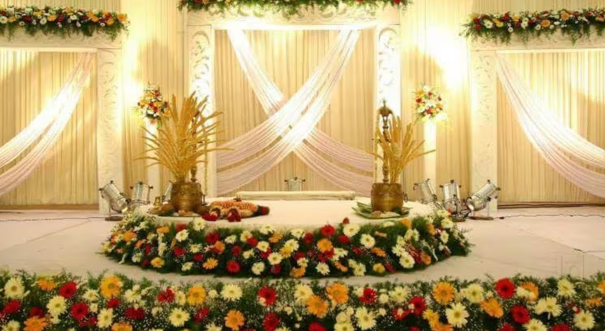

ALANGUDI
GURU RAGAVENDRA MARRIAGE HALL

The venue was always the ancestral place of the groom or the bride or better yet a temple.
Those days are long gone by.
The first choice for wedding venues is marriage halls.
The only thing that comes out to be as costly is the catering.
It is not just the financial aspect that makes picking one of the finest marriage.
Wedding planning with friends can be a lot of fun.
But planning a wedding on your own can be even more fun.
If the thought of planning your wedding all alone bores you to tears.
It you can always enlist the help of your married friends and family.
If you know is as excited about welcoming you into their marriage as you are.